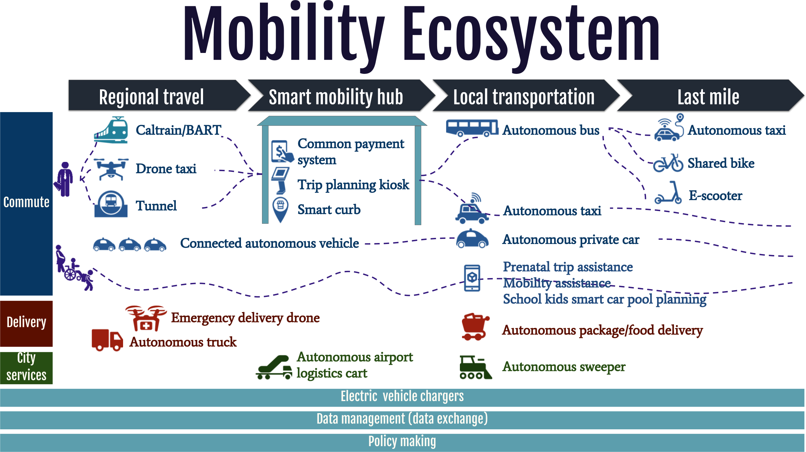

Today, two-thirds of trips in the Bay Area are in single occupancy vehicles. Traffic congestion is reducing quality of life for our residents through long commute times, pollution, and traffic fatalities. Simply converting all vehicles to AVs, without considering the impact on lives of our residents could make the problems worse by encouraging more cars on the road. For cities, designing for an autonomous future means requires incentivizing shared, electric, autonomous vehicles that are integrated with our public transit system and equitably deployed. By focusing our efforts here, we can create a sustainable transit system in the long term.
In the area of transportation, the Mayor’s team believes a smart city is one that:
- Eliminates all traffic-related fatalities and reduces severe injuries
- Reduces the environmental impact of vehicle miles traveled
- Creates a more balanced and equitable transportation system
- Creates a more livable and walkable city
- Shares and utilizes data to optimize the transportation system while protecting residents’ privacy
Imagine an autonomous future
In next few decades, autonomous transportation will transform how we live, work, and consume goods and services. Check out all the types of autonomous vehicles being tested and designed for the future.
In the next few decades, autonomous transportation will transform how we live, work, and consume goods and services. This moonshot diagram is how the Mayor’s Office envisions the mobility ecosystem in 20-30 years. We believe it should be an integrated solution that covers the whole mobility journey (regional travel, smart mobility hub, local transportation and last mile) of a San Jose resident or visitor. The mobility ecosystem should also offer a transportation solution for everyone, especially those with special needs. Furthermore, the mobility ecosystem involves not only passenger transport, but also goods delivery, city services, as well as hard and soft infrastructure like Electric Vehicle (EV) chargers, data sharing and regulations.
A new way of working
At the beginning of 2017, we convened a roundtable of Silicon Valley autonomous vehicle companies and shared with them our vision for AVs in San José.
Under California law, autonomous vehicles can already be tested on roads in San José. But, we believe that collaborating with the private sector to ensure this new technology is deployed in safe and sustainable ways will ultimately benefit the public in the long term. So, during the roundtable we asked the companies where they see benefits for collaborating more closely with city government. The companies were most interested in specific use cases, designate testing zones, provide access to city data and road infrastructure. And, in return, we were interested in use cases designed around important transit points like our airport and train station, connecting low-income populations to public transit, and busy traffic corridors. We shared that the city would want to ensure that this next generation of mobility would be safe, equitable, and sustainable – and that data and learning should be shared both both ways. Having this kind of open dialogue with industry at the start of a technology lifecycle is a new way of working.
Path to AVs
Based on these and many other conversations, we issued a Request for Information (RFI) in June 2017 to AV companies around the world. We outlined specific use cases around connecting people to their work places, connecting low-income areas to public transit, and connecting our airport and train station.
To enable AV testing, we gave companies access to curbside pickup and dropoff spaces, electric vehicle charging stations, and an open API for our real-time traffic signal data. Because residents may have safety concerns about AVs, we also offered to help companies engage our community as we work towards rolling out AVs on our roads.
In return, we asked companies to be lockstep with us on deployment, share with us data like where potholes are and whether AV cameras pick up any damaged street furniture like light poles, and be long term partners with us as they scale AV technology.
We received 31 proposals, the most enthusiastic response to autonomous vehicle RFIs of any city to date. Working closely with these companies, we’re on track to launch several of these pilots by the end of the year. We’ll update you as we go!
Tools & Resources
Are you interested in launching an autonomous vehicle pilot in your city? Check out our Autonomous Vehicle Playbook and Autonomous Vehicle Request for Information to get started.
Thanks to the San José Department of Transportation for their leadership on autonomous vehicles.